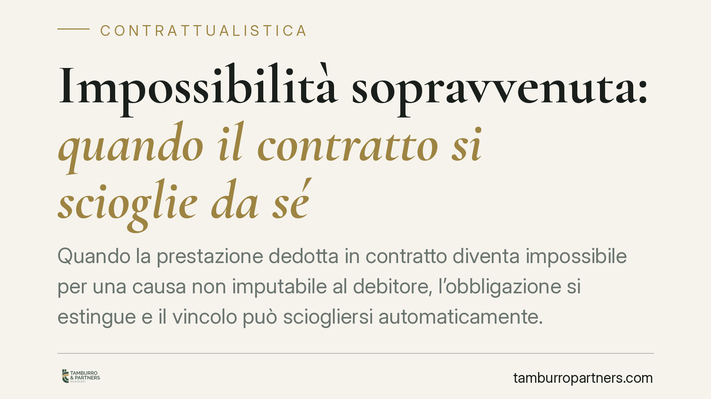

Impossibilità sopravvenuta: quando il contratto si scioglie da sé
Quando la prestazione dedotta in contratto diventa impossibile per una causa non imputabile al debitore, l'obbligazione si estingue e il vincolo può sciogliersi automaticamente. È un meccanismo che il Codice civile disciplina con precisione, ma che genera dubbi ricorrenti su effetti, rischi e restituzioni. Ecco come funziona e quali cautele adottare.

Il fatto e perché conta
Un evento imprevisto rende impossibile eseguire ciò che si era promesso: un bene perisce, un divieto sopravvenuto blocca l'attività, la prestazione personale non può più essere resa. In questi casi il diritto civile non impone di risarcire chi non poteva evitare l'impossibilità: prevede invece che l'obbligazione si estingua e che il contratto, a certe condizioni, si sciolga senza bisogno di un giudice.
Comprendere il funzionamento di questo istituto è decisivo perché incide su chi sopporta il rischio della prestazione mancata e su chi deve restituire quanto già ricevuto.
Inquadramento normativo
Il punto di partenza è l'art. 1256 c.c.: l'obbligazione si estingue quando la prestazione diventa impossibile per una causa non imputabile al debitore. L'impossibilità deve essere oggettiva (riguardare la prestazione in sé) e assoluta, non una semplice maggiore difficoltà o onerosità.
Nei contratti a prestazioni corrispettive interviene l'art. 1463 c.c.: la parte liberata dalla propria obbligazione non può pretendere la controprestazione e deve restituire ciò che ha eventualmente già ricevuto, secondo le regole dell'indebito. È qui che il contratto "si scioglie da solo": la risoluzione opera di diritto, senza necessità di una pronuncia costitutiva del giudice, che eventualmente si limita ad accertarla.
Il quadro si completa con le ipotesi intermedie. L'art. 1464 c.c. disciplina l'impossibilità parziale: l'altra parte ha diritto a una riduzione proporzionale della propria prestazione oppure può recedere se non ha un interesse apprezzabile all'adempimento parziale. L'art. 1465 c.c. regola il passaggio del rischio nei contratti traslativi di proprietà: chi ha acquistato un bene individuato sopporta la perdita anche se la consegna non è avvenuta. L'art. 1466 c.c. estende i criteri ai contratti plurilaterali.
Sul piano applicativo, la Corte di Cassazione (sent. 29 marzo 2019, n. 8766) ha ricondotto all'impossibilità sopravvenuta anche i casi in cui viene meno la possibilità stessa di utilizzare la prestazione ricevuta, valorizzando la finalità concreta perseguita dalle parti.
Implicazioni pratiche
Per chi ha promesso una prestazione, la liberazione non è automatica: occorre dimostrare che l'impossibilità sia oggettiva, sopravvenuta e non imputabile. Un'inadempienza mascherata da forza maggiore non regge.
Per chi attende la prestazione, l'effetto è duplice: da un lato non è più tenuto a pagare o a eseguire la propria parte, dall'altro perde il diritto al risarcimento, perché manca la colpa del debitore. Restano invece dovute le restituzioni di quanto già versato.
Un passaggio spesso trascurato riguarda il creditore in mora. Se il creditore ha ritardato ingiustificatamente nel ricevere la prestazione e nel frattempo questa diviene impossibile, il rischio si sposta su di lui: il debitore resta liberato e conserva il diritto alla controprestazione.
Nei contratti con effetti traslativi, poi, la regola del rischio a carico dell'acquirente (art. 1465 c.c.) può sorprendere: chi ha comprato un bene già individuato può doverne sopportare la perdita anche prima di averlo materialmente ricevuto.
Cosa fare in concreto
- Verificate la natura dell'impossibilità. Distinguete l'impossibilità oggettiva e assoluta dalla semplice maggiore onerosità, che segue regole diverse (art. 1467 c.c.). Solo la prima estingue l'obbligazione.
- Documentate la causa non imputabile. Raccogliete prove del fatto sopravvenuto (provvedimenti, certificazioni, comunicazioni) per sostenere la liberazione o contestarla.
- Attivate subito le restituzioni. Se il contratto si è sciolto, quantificate e richiedete formalmente quanto già corrisposto, per evitare che i termini di prescrizione o le contestazioni si complichino.
- Controllate le clausole contrattuali. Molti contratti disciplinano forza maggiore, allocazione del rischio e recesso: queste pattuizioni possono modificare l'esito rispetto alla regola generale.
- Non attendete inerti se siete in mora. La mora del creditore ribalta il rischio: consigliamo di formalizzare tempestivamente la disponibilità a ricevere la prestazione.
L'impossibilità sopravvenuta è uno strumento di equilibrio: libera chi non poteva evitare l'evento, ma impone rigore nella prova e attenzione agli effetti restitutori. Un'analisi anticipata del contratto, prima che il problema si manifesti, riduce sensibilmente il contenzioso.
---
*Contributo informativo a cura di Tamburro & Partners - Avv. Giuseppe Tamburro. Non costituisce parere legale.*
Ogni contratto ha il suo equilibrio.
Se vuoi una revisione delle clausole o una redazione su misura, scrivi allo studio. Ti rispondiamo entro un giorno lavorativo.